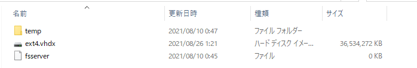

WSL2 の仮想ディスクを圧縮する
WSL2 使っていると、気が付いたらハードディスクの容量を圧迫していたなんてことがよくあります。
仮想マシン上で大きなファイルを作成したり、作業をしているうちに当然仮想ディスクのサイズは大きくなりますが、仮想マシン上でファイルを削除し他場合、仮想ディスク内で df -h などすれば容量が減っていることを確認できるのですが、実は仮想ディスクのファイルそのもののサイズは解放されません。
ここでは、肥大化した仮想ディスクのファイルのサイズを解放する方法を紹介します。
目次
仮想ディスクの確認
WSL2 の仮想マシンのファイルは Microsoft Store からインストールされた Ubuntu であれば以下のパスにあります。
C:\Users\{USERNAME}\AppData\Local\Packages\CanonicalGroupLimited.UbuntuonWindows_xxxxxxxxx\LocalState\ext4.vhdx
.vhdx は Windows の Hyper-V の仮想ディスクフォーマットなのかしら...
Tips: Docker Desktop for Windows の場合
Docker Desktop の WSL2 バックエンドでも WSL2 の仮想マシンを使いますが、むしろ Docker 仮想マシンの肥大化のがやばいかもしれません。
イメージビルドの際のキャッシュとかイメージそのもので容量を食べますし。
Docker の WSL2 のディスクイメージは以下にありました。
C:\Users\{USERNAME}\AppData\Local\Docker\wsl
私の環境の圧縮前のサイズはこんな感じ
3.6GB ぐらいでしょうか。

df -h の結果は以下なので実際のディスク消費量と 1GB ぐらい差がありそうです。

仮想ディスクの圧縮
1. WSL の停止
WSL を止めます。
仮想マシンを停止した後、念のため WSL のサービスも落とします。
仮想マシンのシャットダウン
PowerShell か Command prompt で以下を実行
wsl --shutdown
WSL サービスの停止
PowerShell か Command prompt を管理者として実行し、以下コマンドを実行
net stop LxssManager LxssManager サービスを停止中です. LxssManager サービスは正常に停止されました。
2. DISKPART で圧縮
PowerShell や Command prompt から以下コマンドで DISKPART を起動
diskpart
起動したら以下コマンドで仮想ディスクを選択します
DISKPART> select vdisk file="C:\Users\pemugi\AppData\Local\Packages\CanonicalGroupLimited.UbuntuonWindows_xxxxxxxxx\LocalState\ext4.vhdx" DiskPart により、仮想ディスク ファイルが選択されました。
そして圧縮します
DISKPART> compact vdisk 100% 完了しました DISKPART> exit
3. WSL サービスの再開
PowerShell か Command prompt を管理者として実行し、以下コマンドを実行
net start LxssManager
まとめ
DISKPART を使って vhdx を圧縮する方法を紹介しました。
Webエンジニアやバックエンドエンジニアの開発環境は、ここしばらく Mac が優勢ですが、今後 Windows + WSL2 な人も増えてきそうかな？
WSL や Docker Desktop for Windows (WSL2) を使ってて、仮想ディスクの容量に困ったら試してみてくださいませ～。
Welcom to chizuwota!!
chizuwota という屋号で開業
1 年ぐらい前から細々と副業するために開業して、個人事業主として活動してました。
屋号は chizuwota です。
地図オタクとよべるほどの人間ではないけれど、それ以外に取り柄もないし。
あと chizuwota.net というドメインは学生時代の2006年から使っていて愛着があったのでそのまま屋号として採用。
情報発信で恩返し
2008 年に株式会社サイバーマップジャパン(-> マピオン -> One Compass に社名変更)に入社してからずっと空間情報を扱うのデータエンジニアやバックエンドエンジニアとして業界にかかわってきました。
平凡なエンジニアなんですが、15年も同じ領域でやっていれば多少の蓄積はあるものです。 いままで情報発信はあまりしてこなかったのですが、40歳目前ですが遅すぎることもないかなと思い、なけなしの知識を発信していければと。
そして、空間情報関連の技術がさらにいろんな業界に広がっていくことに超微力ながら貢献できたらなと思ってます。
もちろん、個人事業の集客も兼ねていますけどね！
静的サイトジェネレータ Nikola で作ってるよ
このサイトは Nikola という Python で書かれた静的サイトジェネレータで作っています。
以下採用理由
- Markdown で書ける
- 開発が活発(2021-08-21 現在)
- 設定がシンプル
- github pages へのデプロイがコマンド一発
- github actions も簡単
by PEmugi